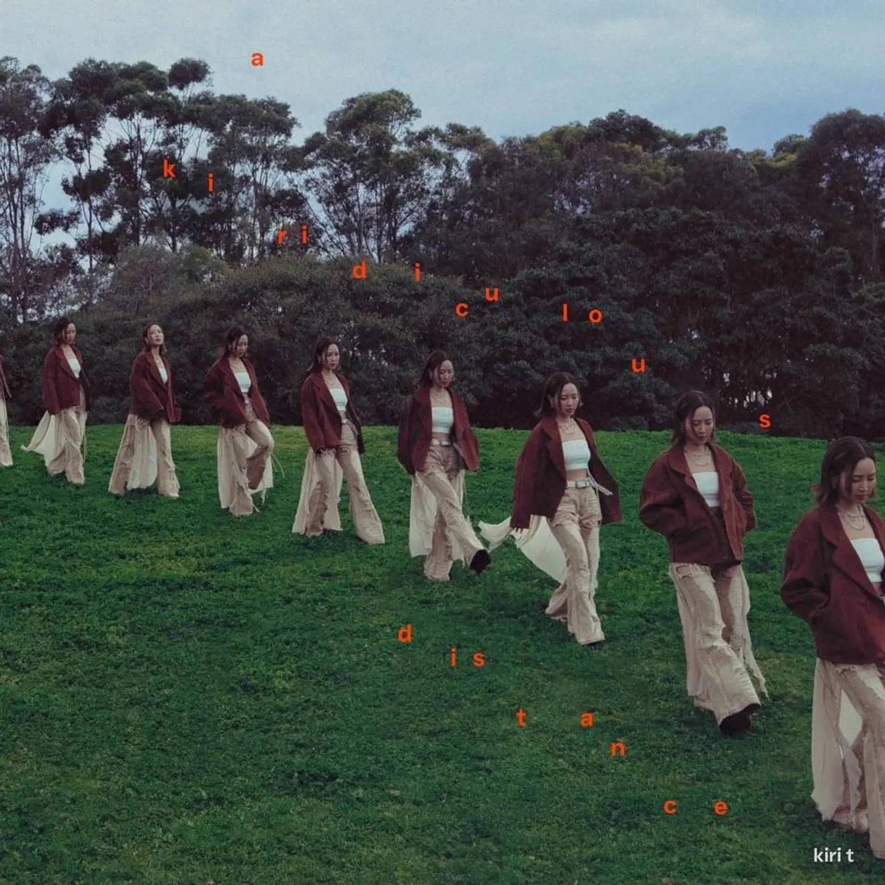

Album#14
a kiridiculous distance
{kind=link}

专辑信息
- 专辑名称：a kiridiculous distance
- 歌手：Kiri T (谢晓盈)
- 年份：2025-11-18
- 风格：流行、粤语
- 时长：约 40 分钟

网易云音乐的每日推荐了《我可能是回避型》，被封面和歌名吸引，听了听，还蛮喜欢 Kiri T 的声音和歌曲风格，就把专辑听了听。
{kind=link}
{kind=link}
「kiridiculous」是用「Kiri」和「ridiculous（荒唐的）」组合出来的一个单词，「a kiridiculous distance」是一段未知的距离，一段和爱、世界、理想的自己、幸福……之间的距离，到底还有多远？不知道，而这专辑大概就是 Kiri T 寻找答案的过程吧。
专辑大部分歌曲是粤语，我觉得粤语和日语发音都比较好听，即使听不懂唱什么也会喜欢。除了粤语，里面还有一两首英文和国语。专辑整体听起来是轻松的、舒缓的。
专辑介绍
离谱的我，距离幸福还有多远？
我＿＿＿＿＿理想中的自己
我＿＿音乐
我＿＿＿＿＿＿你
我＿＿＿＿爱
我＿＿＿＿＿＿＿＿这个世界
我_______________________目的地
我_(?)_幸福
当时的我
戴上了头盔，
坐在喜爱的钢琴前面，
弹奏自己创作的音乐。
当时的我
或许还未料到，
带领我前进的那一辆货车，
终点会是哪里。
骤眼间走了两年，
起点是一件离谱的事，
过程是疑惑、相信、爱、受伤、放下……
但终点呢？
所谓的终点，
原来是通往另一个世界的出口，
另一段新旅程的开始。
带着疑惑一直走到这里，
走着走着，
我走向了更多的未知……
到底我和自己的目的地，
还有多远的距离？
TRACKLIST
introduction to avoidance & 我可能是回避型
「avoidance」即回避，《introduction to avoidance》可以看作是《我可能是回避型》的前奏，会让我想到这样的画面：独坐在阴天的海边，海面上几只海鸥盘旋，灰沉沉有点失落的感觉。
搞错
冲突太多 说明人太自我
我使他很困扰 差不多 沟通像交功课
想为我好 为我好 抱着我 躲不过
我都只感觉到 辛苦想逃离或纵火
其实我好想接受爱
其实不舍得放开
而难在怎开口问爱未爱得来
几多次
相遇 之前 还是喜欢一个人
伤害 之前 期望走得很近
怎么喜欢上他了 我却封印
搞错
思辨太多 我怀疑我做错
注释「依恋」那些 不清楚 资料像关于我
我想为我好 为我好 渴望爱 只不过
是我满身刺 让我不相信 如果
我想好好接受爱
唯独羞耻得似灾
虔诚像他都会倦怠 没有将来
几多次
相遇 之前 还是喜欢一个人
伤害 之前 期望走得很近
怎么喜欢上他 仍然是太惊慌装作挑衅
其实脚震
我远走以后
一个又 哭到回首
再远走以后
得自由 失了港口
相遇 之前 从未喜欢一个人
伤害 之前 还值得走多近
不懂怎么去相处 期待那一位 祝我好运
谁害怕我
氹我一氹1
歌是好听的，但歌词里写的「回避型」人格让我觉得很难相处。渴望被爱，但靠近了又怕伤害； 起了冲突就想逃避，不想面对；觉得对方爱自己，就要无条件接纳自己，就可以不断地消磨对方。或许回避型的人渴望一个怎么推都推不走的人，但这样的人大概很少很少吧。
我害怕的可能不是你 ⸺ 我真正害怕的，是那个连自己也不喜欢的自己。
有时会听到人说「我也想改变，但我真的改变不了，我做不到」，是真的无法改变吗？尝试过吗？自己都改变不了自己，别人就能做到吗？别人也是无能为力。
想起了好乐团的《我爱你，却不能拯救你》 中唱的：
可你是你 我们是独立的个体
你喜欢做你自己
我讨厌这种无能为力
我爱你 也爱着我和你
我爱你 却不能拯救你
有些话要用英文说
不知道要怎麼說
You taking care of yourself?
她應該會遷就你
Still got your things on my shelf
好想打幾段字 或 錄幾分鐘
但我指尖不夠衝動
You wanna hear what I’ve got to say?
很討厭今天 沒理由道歉
Cuz I don’t know if I’m crying
Tears are not drying
夜半三點 沒對象宣洩
Cuz I don’t think that I’m fine
I’m sorry that you’re not mine
Lalalalalala……
I don’t remember your number
單身過得更加好
I don’t think I care if I don’t see you anymore
And if you call I might not pick up the phone
偏偏把思念換做舊相一幅
但你當然不會感動
You wanna hear what I’ve got to say?
很討厭今天 沒理由道歉
Cuz I don’t know if I’m crying
Tears are not drying
夜半三點 沒對象宣洩
Cuz I don’t think that I’m fine
I’m sorry that you’re not mine
想準確一點 沒對白道歉
Cuz I don’t know if I’m crying
Tears are not drying
沒法啟齒 但有話想說
Cuz I don’t think that I’m fine
I’m sorry that you’re not mine
歌曲介绍
請你別把我的真心話，直譯做中文
有些時候，
我會反反覆覆、吞吞吐吐、支支吾吾，
中英夾雜地
說一些很奇怪的說話。
一些對於別人來說，
最簡單直接的真心話，
我可能要思考半天，
在一半是英文、一半是中文的腦袋裡，
揀選一個最適當的詞語。
所以可以的話，
請你從我原汁原味的文字中，
盡量理解，
盡量領會。
要对方从只言半语中猜测自己内心想法，我想还是挺困难的，我更喜欢把话挑明了说清楚。不过我也能理解，有的话说出来怕伤害对方，可能就支支吾吾地，但这样对方就不懂你的真实想法和感受，自己可能还会觉得对方不理解自己而生气，一开始就把话说清楚也许更好。
一些话用别的语言会更容易说出来吗？我没有类似的经验，或许会？
「Cuz I don’t know if I’m crying, Tears are not drying」让我想起了梁博的《变了》：
你说我笑的多了
因为我不会哭了
可是如果我 如果我哭了
那就止不住了
每次梁博唱到这段歌词，我都觉得很感动。
中暑伤风加失恋x2
全世界也这么热
盛夏夜有段情决裂
谁远去带走温热
剩下寂寞独留地铁
尖沙咀讲分手 车厢中给处决
深水埗 A 出口 可否得到解脱
热汗在蒸 眼泪滴下 浪漫就如白雪
And it’s colder without you
我的心竟在瞬间变冰冻
每呼一口气也很冻
有刺骨的冷风
Now it’s snowing without you
泪雨散落长街多么感动
雪花飘起伴我心痛
到咖啡厅过冬
Why’s it so cold this summer?
行过这爱恋沙漠
望着第二段情闭幕
时间讽刺也刻薄
又是盛夏就如习作
西湾河讲分手 好比短篇小说
筲箕湾 B 出口 铺好一吨积雪
热汗在蒸 眼泪滴下 命运未能自决
And it’s colder without you
我的心竟在瞬间变冰冻
每呼一口气也很冻
有刺骨的冷风
Now it’s snowing without you
泪雨散落长街多么感动
雪花飘起伴我心痛
问某餐厅店东
Why’s it so cold this summer?
伤风 永未 复元
金钟 转换 病源
一中暑 又再失恋
Now it’s warmer without you
自己多拥抱去驱走冰冻
再不想听冷语嘲讽
我这一身羽绒
Getting better without you
让我跌入阳光沙滩滚动
任肌肤蒸发我伤痛
白背心先正统
Let’s say I love this summer
Da Da Da Da Da Da Da
Da Da Da Da Da Da Da
Da Da Da Da Da Da Da
Da Da Da Da Da Da
Da Da Da Da Da Da Da
Da Da Da Da Da Da Da Da
Da Da Da Da Da Da Da Da
歌曲介绍
香港是一个让人热到晕、冻到病，而且伤心到流眼泪的地方
为甚么这个地方，
可以让人热到汗流浃背，
又让人觉得寒风刺骨？
香港的夏天不好过，
因为在这里我同时能中暑，
同时能伤风，
而且同时又失恋。
但是，
我仍然想拥抱今个夏天，
穿起属于我的白背心，
过好属于我的好日子。
虽然「中暑伤风加失恋」还要 「x2」，但歌听起来挺欢快的，充满活力的盛夏似乎让人不那么难过。
荣誉博士
差 死背最差
我不想修的科先吃香吧
迷上笑话 专研喇叭
我不喜欢的比不上的话
Gimme a night under the moonlight
A little more time to get this right
Think I got a PhD in mp3
听很多声音精通得不可思议
Think I got a PhD in jpg
听很多画家坎坷得不敢私议
Ohhhh
鬼才们为何不试
Oh
Honey I just wanna be a moon walking chef but
经纪 cert 像办法让我铺个后路
记保险拼图 我只感过劳
I just made me some cheerios mixed with oreos
无尽头功课损耗太多
但正路只爱着星座
Think I got a PhD in mp3
听很多声音精通得不可思议
Think I got a PhD in jpg
听很多画家坎坷得不敢私议
未教就通 我直头感应是使命
是有日碌了落楼梯 先终于苏醒
Yes I got a PhD
But I gotta be mainstream
Yes I got a PhD
But I gotta be mainstream
Think she’s got a PhD in low-cut jeans
And he’s got a PhD in TST
Think I got a PhD in being me
Only got a PhD in Kiri T
Ohhhh
鬼才们为何不试
Ohhhh
I am oh I am
Ohhhh
鬼才们为何还不试
Ohhhh
PhD
歌曲介绍
我要精通自己心意，做一件锺意的事
医生定律师，
保险定教书，
搵食定锺意？
一堆堆质疑，
一句句评语，
到底做人要有大志，
定係做一件锺意的事？
如果音乐係长处，
可唔可以做 mp3 博士？
「精通自己心意，做一件锺意的事」。
「PhD in mp3」、「PhD in jpg」押韵也很有创意。
蓝剔未必是坏习惯
「蓝剔」即蓝色勾选标记 (✓) ，表示消息已被阅读（已送达）。
突然病了的话 未能赴约的话
你可复一个 符号吗
我可否知你 还好吗
日前问你的话 目前未答到吗 须三思吗
你应该想发人深省
我即管等到无止境
假使我 凌晨传出的心意 不够你共鸣
都不必苦恼 明晨仍可 讲声你好
如果 很喜欢 也可以吞吞吐
如果 不喜欢 也可以不必透露
这一种爱慕 不必很过度
不清不楚 刚刚好
宁愿 真心话 你一世不宣佈
宁愿 忐忑的 我不会伤心过度
宁愿一天 一句问好
馀下篇幅 不须奉告
这种爱 原来无需剔号去 使答案确定
清晰多恐怖 朦胧蓝色 彷彿更好
如果 很喜欢 也可以吞吞吐
如果 不喜欢 也可以不必透露
这一种爱慕 不必很过度
不清不楚 刚刚好
宁愿 真心话 你一世不宣佈
宁愿 忐忑的 我不会伤心过度
宁愿一天 一句问好
馀下篇幅 不须奉告
留白不等于很离谱
期待比分手收场好
写信可以不写句号
恋爱
有时自信或不算高
我亦每日过得更好
甚至天天找新嗜好
如果 很喜欢 也可以吞吞吐
如果 不喜欢 也可以不必透露
不必多两步 不必少两步
彼此之间 刚刚好
宁愿 真心话 我心里早猜到
宁愿 忐忑的 我拣我方式爱慕
如果一生 一世问好
谁话不可 天荒地老
歌曲介绍
拒绝相信被拒绝；最好方法，就是拒绝相信蓝剔是交叉
蓝剔，
代表你已读不回，
代表我的落空；
但同时，它也代表
你看过我的说话，
你曾经出现在这里，
我们不太近，也不太远。
如果，
我看见的蓝剔，
是和你野餐的蓝天；
是英吉利海峡的早上；
是第一次相遇时的校服。
如果，
我听到的静默，
是指挥棒停在空中的一小节；
是藏住秘密的山洞；
是指尖距离屏幕那一毫米。
那麽，
不清不楚，也不是坏习惯。
心心念念变成灰色，刚刚好。
在通讯软件中，如果对方「已读」自己的讯息，讯息便会显示「蓝剔」标誌。当你看到「蓝剔」却得不到回复，「蓝剔」便可能成为一个刺眼的存在；当你发现自己过分在意「蓝剔」，可能也代表你过分在意这份落空。「蓝剔」的「蓝」，可以是忧伤的蓝，也可以是朦胧的蓝；虽然它象徵你没有得到回复，但也代表他的眼光曾经落在你的说话上，你与他曾经一起出现过在这里，只是彼此之间，还存在着不多不少、刚刚好的距离。
对方已读不回是什么意思呢？很在意，又不想接受真相，「清晰多恐怖 朦胧蓝色 彷彿更好」。
伤心的时候别说话
无人理解的压抑 和痛苦的记忆 不用说
头颅内里错乱到 仍没法去汇报 文字已被痛抢夺
随你自闭自困 故事我未会多问
掩上大门 跟手熄灯 陪着你等
沉重话题别再演
毋用理会我自便
眉宇我看见 泪眼我也看得见
目前
即管去沉默 不必说话
即管去沉淀 好好消化
伤心了 哪像要 开记招 任人盘问
只想呑了的话
安心去沉默 不必说话
安心去沉淀 好好消化
当想要 借用我 肩膊的 就来提示
Just know that I’ll be here
无人理解的痛斥 和切肤的记忆 不用说
繁忙外界太乱了 无力再应付了 留力对付那心酸
随你自闭自困 脆弱我未会要步近
一声不发 漆黑之中 陪着你等
回复路程别要赶
横竖我夜晚不赶
随意去占据 绝对宁静的地方
即管去沉默 不必说话
即管去沉淀 好好消化
伤心了 哪像要 开记招 任人盘问
只想呑了的话
安心去沉默 不必说话
安心去沉淀 思海碎花
当想要 借用我 肩膊的 就来提示
Just know that I’ll be here
Just know that I’ll be here
I’ll turn out the light
一起叹喟
I’ll turn out the light
天光之际
残破伤口已冲洗
歌曲介绍
讲到的话，跟我说；未讲到的话，陪你等
如果世界太嘈杂，
不如索性关门，
听一下你的呼吸。
如果世界太灰暗，
不如索性熄灯，
看顾一下你的感受。
在这一刻，
我陪你软弱、陪你虚耗、
陪你不知所谓。
我会尽我能力去让你知道，
在这一刻，
世上最珍贵的是你的情绪。
伤心的时候什么都不用说，「留力去对付那心酸」，「安心去沉默」，「Just know that I’ll be here」。
哀伤和爱上算不算同音字
你近来怎麽识发光
你为何咬着橡皮糖
外表这样好看 神秘地来探望
暖麦芽豆奶给我禦寒
我突然听到心跳声
我并无意欲换环境
就等你来回应 对终身对象重头确认
有任何状况都会候命
恋爱註定随时能哀伤 随时能爱上
打打闹闹 哭哭啼啼
派一些安慰奖
可以算是类似神经质 同时神圣
即使差一点缺氧 给你的那首歌
我 还在唱
有裂痕当然可以补
有阵时确实被难倒
用几百字投诉 也许拥抱着才是出路
感到局势在缓缓地变好
恋爱註定随时能哀伤 随时能爱上
打打闹闹 哭哭啼啼
派一些安慰奖
可以算是类似神经质 同时神圣
即使差一点缺氧 给你的那首歌
我 还在唱
好 重新给你欣赏
还是对着干 然后疗伤
恋爱又似颜色笔 又似来福枪
轰轰烈烈 一下疏忽
结果不堪设想
所以说是类似神经质 同时神圣
反正关係爱恨交织
我 全奉上
歌曲介绍
恋爱是：爱上一个人，哀伤一个人，爱上一个人
为何我爱你的单纯，
同时又为你的不识趣感到沮丧？
如果恋爱有过程，可能是：
爱上一个人，
哀伤一个人，
爱上一个人……
「哀」是否註定包含在「爱」之中？
倒后走不需要什么理由
剪了头发 感冒也快复原
你没发现
上个讯息在几天前
Who made you change your mind
突然听摇滚音乐
不喝咖啡 限动分享拿铁
我们还在一起走
只不过在向后走
I know the truth
And you don't know it you just won't know it
不在乎谁先开口
不在乎用个什么理由
至少点点头
But you don't know it you just won't know it
Baby it's the truth
But you don't know it you just won't know it
那时候我们渴望时间走得
慢一点
在你眼中 我没有缺点
And after all these years
你好像越来越远
远得我用望远镜
也看不见
我们还在一起走
只不过在向后走
I know the truth
And you don't know it you just won't know it
不在乎谁先开口
不在乎用个什么理由
Baby it's the truth
But you don't know it you just won't know it
原来有距离 是道危险题
会想念可能也会忘记你
有过几秒 怀疑我自己
想再听你说我 不可以忘了你
有些人一起走
只能一起向后走
You know the truth
But you don't say it you just won't say it
有一个人先开口
有那么多用过的理由
不就分个手
But you don't say it you just won't say it
先说的先自由
If you won't say it let me just say it
专辑里唯一一首国语歌，「原来有距离 是道危险题」。
通往另一个时间的出口
是 是有些事 沒有地球人 可理解
鎖鏈總太多 斧頭從未夠大
若 共我一樣 直綫亦常常 想到歪
來 頭上的燈膽 不要嘥
狂人情侶 怎麼吻起
想親我 周遭卻 有毒氣
除下鋼盔 橫竪你最後 都會死
何妨陪我 刻一塊碑
記下曾 離譜的 顛覆的美
蝴蝶有 莊周的 生醉夢死
你一生得 一張戲飛
陪我找 冰川中的缺口
世界或者真是方的 海角有出口
人笑痴 只需輕拖我手
信我 是種 轟烈的溫柔
願 為你洗滌 被世俗加諸 的知識
幾多假聖經 原來 全沒價值
願 共你交換 沒有別人明 的眼色
鯨 潛入水底講 親愛的
為何來到 戈壁探戈
不懂我 不緊要 抱住我
誰話過 必須搞懂化學科
至可點起彼此愛火
陪我找 冰川中的缺口
世界或者真是方的 海角有出口
人笑痴 只需輕拖我手
信我 是種 轟烈的溫柔
暴風溫柔
陪我找 知識中的缺口
世界或者真是假的 抽屜有出口
如最終 追不到自由
吻我 在這 荒謬的星球
safe but sorry
Would I ever get over the people who make me sad
And all the things that make me mad
My doctor told me I’m depressed
And when I was a child I thought bad guys end up in hell
Now I’m pretty sure I’m one of them
Cuz everyday’s a living hell
Keeping myself busy so I don’t have time to think
Drink until I think about nothing
I’m so tired of saying things that I don’t mean and fighting when I’m weak
Smile when I need
To hide my unease
I’m so sick of accepting things I disagree with,
screaming silently
So that I can be
Safe but sorry
Safe but sorry
I’ve been thinking that lately I can’t seem to give a crap
Cuz everything we seem to do
Is driven by chasing views
But when I slow down I freak out
Cuz every little thing’s too loud
Honestly its nothing new
And I just need another pill
Keeping myself busy so I don’t have time to think
Drink enough till I can say these things
I’m so tired of saying things that I don’t mean and fighting when I’m weak
Smile when I need
To hide my unease
I’m so sick of accepting things I disagree with,
screaming silently
So that I can be
Safe but sorry
Safe but sorry
Safe but sorry
Safe but sorry
I’m so tired of putting up a happy face and talking through a screen
I just wanna be free
I just wanna be free
I’m so sick of accepting things I disagree with,
screaming silently
So that I can be
Safe but sorry
Safe but sorry
Safe but sorry
Safe but sorry
Safe but sorry
Kiri 唱英文蛮好听的。歌名让我想起了 Taylor Swift 的《Safe & Sound》。
至少做一件离谱的事
你又邪恶 又颓废 又神化 但可爱
穿加厚的 生化衣 坐旁边 仍有害
我话无悔 就无悔 毒苹果 亦照栽
时代太坏 若再等 怕我已不在
将 潘多拉盒子 的盖 慢慢揭开
礼物再坏 也是礼物
胜过永不拆开
是场恶梦
我仍然拣你 禁止都没用
尽情失控
离谱的美丽 世人永不懂
评论太多
如果想快乐 别稀罕赞同
能跟你 在荆棘中抱拥
就算伤 根本不痛
快没时间 没时间 热情过 就冰冷
收到帐单 先再讲 目前只 求灿烂
你若然怕 就陪我 用情歌 在壮胆
谈情从来 没有谱 不必管 指挥棒
是场恶梦
我仍然拣你 禁止都没用
尽情失控
离谱的美丽 世人永不懂
评论太多
如果想快乐 别稀罕赞同
能跟你 在荆棘中抱拥
就算伤 根本不痛
浪漫是 我不信后来 别人能料中
来年流泪 起码现时 都试过洋葱
投降容易老 认命没有种
是场恶梦
我仍然拣你 禁止都没用
尽情失控
离谱的美丽 世人永不懂
徒手挑战过 幸福的意义 先叫做青春
谁相信 幸福只得这种
尚有种 相当激进
（还有青春）
（何妨乱碰）
（唯愿有生）
（闪过一瞬）
歌曲介绍
青春就是一个关于“明知……偏偏……”的态度
青春就是，
你明知他不是你该爱的人，
偏偏义无反顾地继续爱他；
你明知你不再是青春的年龄，
偏偏保持躁动、继续执着；
你明知任性有害，
偏偏想做一件离谱的事。
相反，失去青春就是，
你明知你尚有一点冲动，
偏偏甘愿妥协，
偏偏甘愿投降，
偏偏甘愿认命。
「浪漫是 我不信后来 别人能料中」，明知结果会如何，但偏偏还是要去试，青春或许就是这么「离谱」。
脚注:
粤语中「氹我一氹」是「哄我一下」的意思。